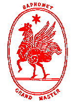

an Epistle of Baphomet to His Excellency James Thomas
Windram,
Very Holy, Very Illuminated, Very Illustrious, Initiate of the Sanctuary of the
Gnosis,
his Viceroy in the Union of South Africa.
Do what thou wilt shall be the whole of the Law.
It has seemed fitting to Us to explain in a familiar form and simple the general principles of the government of the Profess-Houses of our Holy Order, so that the Abbot and Abbess of every such house shall understand by what paths to pursue the great aims which inspire Us to the service of our Brethren.
1. Subject to the general discipline of the Order every Abbot is to be absolute master of the house of which he is in charge. Most of what follows is therefore suggestion only.
2. The first principle of the growth of the Order as of all living things is modulation or variation; uniformity is to be detested as a symbol of death. Therefore each Profess-House is expected to develop a special character of its own, subject to certain broad principles rooted in human nature: and each Profess-House should be the artistic expression of the creative genius and true character of its Abbot. Some will therefore lean to the type of a club, others again to that of the college or university, while yet others will be set definitely apart for the purposes of orphanages, schools or hospitals. But let each Abbot seek with utmost diligence his Will, and express the same in the particular rules which he may make for the order of his house.
Types of houses which are found unnecessary or inconvenient will tend to disappear: those which are found generally suitable will tend to multiply.
It is therefore to be understood that the authorities of the Order charged with the discipline of the Profess-Houses will not interfere with the Will of the Abbot, unless he himself should set up opposition to his own Will as expressed in his obligations solemnly taken to the Order by removing its landmarks or impinging its grand principles. The disruption in his own Nature caused thereby must cause inevitably the ruin of his house and authority will in such a case avert the threatened disaster before its effects become manifest.
3. Concerning Eden and the Oak it is not necessary that I should write openly to you. Only in those houses whose Abbot hold the Seventh Degree will this question arise. And it is here sufficient to say that the ideal condition will be that a Profess-House should enshrine four or more dedicated ministrants to the O.T.O. in the special sense of those letters which is known to higher Initiates, and such should be regarded with the most particular deference and reverence, while at the same time their lofty voew of service forbids them to share directly or indirectly in the government of the house. This ordinance is precise, and infringement will involve the removal of the Abbot. He will hold no intimate communication of any sort with the aforesaid ministrants, except in accordance with the terms of his vow as Sovereign Grand Inspector General.
The symbol of the Profess-House is therefore a great Oak from which flow streams of water to every quarter fertilising indeed the ground about the hill and fortifying with moisture the roots of the oak itself, but not eddying about it and sapping its foundations.
And in the spread of this Eden shall many men rejoice, taking shelter beneath overspreading branches, and refreshing their weary limbs in the fresh waters of the fount celestial pure.
Alternatively, the symbol may be that of a well in the desert, sheltered by four great palms.
4. Familiarty and vulgarity are not to be tolerated in any Profess-House of the Order. Dignity and etiquette are to be strictly observed. Every member of the Order is to remember constantly that he is a King living among Kings, nay, a God in the company of Gods; and jollity iteself is to be recognized as a ritual of cosmic importance, as it is said "The stars also sang together." The key of all conduct, generally speaking, is to make every common thing noble, every small thing great. In saluting a brother, therefore, think that this is the conference of two mighty monarchs on a matter affecting the destiny of empires. Laugh who will that this is the make-belief of children; it is yet the foundation of good manners. Sneer that it is pandering to human vanity; vanity is the father of self-confidence; and that is the father of power. Those fools that fall like Malvolio, let them be medicined by the rough kiss of earth, and if need be by the honest laughter of their fellows, for this is not far from the essence of the Comedy of Pan. But no man is to be despised; for he is a hero, having taken upon himself the burdern of flesh for the fulfillment of his Will. You know well that which is spoke, "Seek Beauty! In Beauty is eternal Truth revealed!" The artist is he who can discover Beauty in all things, for nothing is common or unclean; and by unvarying determination to discover beauty man comes to the heaven of the artist. By beauty, moreover, We mean not any conventional type of sensuous beauty: it lies in the dwarfts of Velasquez and the monsters of Rabelais as in the women of Titian and the heroes of Homer; nor shall one brother do otherwise than lament if he be so limited in vision that he cannot see beauty in that which enchants another.
5. There is no rule with regard to the degree of luxury to be observed in any Profess-House. Travelling brethren are to accommodate themselves gladly to the plank-bed of one Abbot as to the eiderdown of his neighbour: either may be a paradise of love or sleep, as the Will of him that lieth thereon may conceive: for it is our Art to discover ecstasy in all things that may exist. Yet this is cardinal to the door of every Profess-House of our Order, that our great and secret Art is developed through the joys of labour. "Work and be our bed in working!" as though your toil was the basis of the ecstacy of the Marriage of the Gods! Every Profess-House is therefore in some sort a work-house, and a certain simplicity and austerity should thereform inform even the utmost luxury. "Wisdom says: be strong! Then canst thou bear more joy. Be not animal; refine thy rapture! If thou drink, drink by the eight and ninety rules of art: if thou love, exceed by delicacy; and if thou do aught joyous, let there be subtlety therein! But exceed! exceed!"
The rules of Hygeine are therefore to be observed. A wise man will train for a dinner as he would for a race. To enjoy half-warmed Tibetan mutton, the noblest dish we know, it is necessary to starve for six weeks upon a glacier; and the man who has attained Pratyhara can obtain more pleasure from the movements of one muscle of his foot than a Western millionaire from his first season in New York City. The luxuries of the rich are not for all and there is but passing pleasure in them. It is the Art of Our Order to kill the belief that happiness of even pleasure lives in rare things or inaccessible, for this is but a folly as that of the child that cries for the moon. The Abbot of every Profess-House is therefore expected to be an Epicurus, a master of pleasure, an instructor in delight; and he is to know how to obtain all joy, and to be able to teach others to obtain it, by means that are within the reach of all men, excite no envy, and beget no selfishness. Asceticism is not encouraged, save in its old Greek sense of supreme excellence of physical condition; all so-called 'denial of self' is Restriction, which is 'The word of Sin.' It is not ‘self-denial’ for a man to refuse pleasures that hurt his health; for he chooses this course in order to obtain the greater pleasure of well-being. Confusion of thought on this subject is so common that We have no shame in explaining the true view thus fully.
6. When a guest arrives, at a Profess-House, the first evening should be set apart to making him thrice welcome, and it should be as far as possible the Will of all to acquiesce in the Will of the guest. From the following morning he becomes, as the vulgar phrase it, 'one of the family,' and he settles down to the routine of the house. Members of the Seventh and Higher Degrees are naturally received with very special honour.
7. In the theory of the Order, the guest’s right to enter a Profess-House for the appointed period of three days, when the Lodge of the guest is in the same province as the Profess-House, or one month, when it is in a different province, is paramount, and overrides the rightr of the Abbot to close his door. But it is a main principle of the Order that power and authority, while theoretically absolute, are only to be exercised for the good of all concerned; and any brother abusing the great privilege of hospitality by failure to observe tact, courtesy and deference to the convenience and wishes of the Abbot whom he proposes to visit will become amenable to the discipline of the Order. It is evident that those who do not so abuse hospitality will find themselves welcome everywhere.
8.Abbots of those Profess-Houses which approach the domestic type act agreeably to Our will by receiving at least one person every night who is not a member of the Order, should such an one apply, and offering him freely food and shelter. If he be in need of assitance of any kind, it should be gladly given; as for example should he wish to find work, help should be afforded if it be possible to do so without injury to the interests of the members of the Order. this should not be regarded as charity, but as a tribute to the heroism of one who has incarnated in a world whose view is veiled from the unitiated by the hoodwink called 'Suffering.'
9. All residents in the Profess-Houses of the Order are formally bound to perform the four daily Salutations to the Sun as prescribed in Liber CC (Equinox Vol I, No. vi, p.29). The exception is, when actually engaged in a ceremony approved by the Order, such as initiation, invocation, or meditation.
10. The use of artificial light, except for ceremonial purposes, is to be discouraged in the Profess-Houses of the Order; for the Sun is the master of the cycle of life. The exception is when serious intellectual labour is being performed. It is hoped that by this regulation the blessing of normal eyesight may be restored to humanity within a few generations.
11. All residents in the Profess-Houses of the Order are expcets to co-operate in the service of the house to some extent, according to their capacity and bent. The Abbot is to be excepted from this rule, and he will appoint each task to the person best fitted to perform it. He will give to this work all the tact which he is possessed; but the others will on their side exhibit cheerful obedience as a point of honour, regarding it as a privilege to do his bidding, even though it seem unreasonable or unfair. Such conduct has its rewards in the general recognition accorded to it, and those who take advantage of the willingness of others find their loss not only in good report, but in the general deterioration of character which accompanies sloth.
The authority of the Abbot is paramount; and he may use such discipline as he may deem right to do.
But in most cases, when any person refuses to perform an appointed task, it is sufficient if the Abbot enjoin upon all others to emulate the example. If one wheel jar, let the whole machine stop until it becomes free. In practice this method has been found to work with great perfection. After two or three incidents of this kind, the trouble does not recur; should it do so, let the Abbot consider well if he be not seriously in fault of fairness or consideration.
12. Members of the Order who make use of any Profess-House are expected to offer to pay for their entertainment at a rate one hundred per cent higher than that which is current for similar entertainments in the district. But the Abbot will not exact or expect such payment, but neither bestow upon his guests a present. The conflict is to be decided by consideration of the relative means of the traveller and the Profess-House. Thus let substantial justice be done by way of a contention in generosity, instead of social meanness.
Payment is never accepted for any stranger received for one night only under clause 8, but should such a person desire to join the Order, he may be initiated in the Lodge adjunct to the Profess-House according to the Laws of the Order, and then become entitled to all its privileges.
13. The Profess-Houses of the Order are not to be distinguished in any way from the other houses of the neighbourhood, except those which are dedicated to special purposes, which will or will not be made known to strangers as the Viceroy of the Province may decide.
14. Every Profess-House should develop strongly its own specific tradition, and the individuality of that tradition, by the initiation of customs peculiar to itself. The model may be a madhouse or a university, a nunnery or a brothel: this matters nothing; intrinsic strength, and power of adaptability to environment will survice and grown. But intensity of tradition, and peculiarity of custom, will tend to limit the growth and prevent it from attaining unwieldy proportions. Communes, rather than cities, will develop about each parent house. Yet the interest presented to the Order in general by the individuality of each house will stimulate Brethren to visit and ensure the constant interchange of ideas. Further, the peculiarity of custom will beget esprit de corps and such generous rivalry as now prevails between the Universities of Oxford and Cambridge, owing to the application of the principles above set forth.
15. It is impossible to declare in an epistle what should properly form the subject of a great treatise; and it has therefore seemed good to Us merely to jot casual thoughts such as might prove of interest not so much to yourself alone as to those who wishing further information with regard to the peculiarities of our great and holy Order, may inquire of you concerning our rules.
Now there is no law beyond Do what thou wilt: and the object of rules is therefore only to assure to all men the best conditions for the execution of their Wills.
Love is the law, love under will.
The Glory of the All-Father be upon you, and Joy unutterable in the power of Him that we have known.
With our paternal benediction
Baphomet

Text © Ordo Templi Orientis. All rights reserved.
Key entry and HTML coding by Frater T.S. for Sunwheel Oasis, O.T.O.